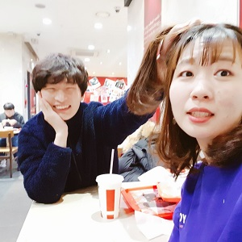

KFC
KFC는 우리가 처음 사귀게 된 날 갔던 곳이라 의미가 남다르게 느껴져.
그때 정말 너한테 찝적대려고 아주 별 짓 다 했던 것이 아직도 생각난다.
다시 생각해도 어떻게 하루에 13시간을 같이 있을 수 있는지 참 신기해.
그리고 KFC에서 나가서 내가 고백하고, 다시 들어와서 한 잔 더했잖아ㅋㅋ
그 때 정말 들어올 때 나갈 때 다르다는 게 이런건가 하면서 신기했었어.
KFC는 우리가 처음 사귀게 된 날 갔던 곳이라 의미가 남다르게 느껴져.
그때 정말 너한테 찝적대려고 아주 별 짓 다 했던 것이 아직도 생각난다.
다시 생각해도 어떻게 하루에 13시간을 같이 있을 수 있는지 참 신기해.
그리고 KFC에서 나가서 내가 고백하고, 다시 들어와서 한 잔 더했잖아ㅋㅋ
그 때 정말 들어올 때 나갈 때 다르다는 게 이런건가 하면서 신기했었어.
이날 우리 홍대에서 놀다가 와인마시러 여기 들어갔었지.
그때 열심히 너 배 만지던게 기억나네ㅋㅋ
이날 너 가죽자켓 입은게 참 이쁘기도 했구,
초커 맨다고 옆머리 들었다가 내리니까
처음보는 모습이 나와서 아름답기도 했었어ㅎㅎ
시험끝나고 홍곱창먹고 기력 충전해서 바로 서울 숲을 가버렸징!
이때 따릉이 타다가 너 사고날 뻔한 건 아직도 아찔하다 으으
그래도 뭐 자전거 타면서 바람 맞는게 좋았고,
꽃다발 사주거나 브루어리 가서 너가 행복해하는게 보기 좋았었네ㅎㅎ
이날 면세점 들렀다가 머리 자르고 익선동 갔었징
너가 한창 찬양하던 익선동 가서 너가 좋아하는 모습 보니까 나도 좋았었어ㅎㅎ
이날은 생각해보면 정말 많이 돌아다녔다. 면세점갔다가 머리자르고, 익선동 갔다가,
저녁까지 또 송해선생님 맛집도 가고, 알라딘갔다가, KFC까지 갔네!!ㅋㅋㅋ
이날 또 한껏 이쁘게 하고 와서 나는 뭐 오래 있어서 좋았었어ㅋㅋㅋ
우리가 처음 데이트한 날 너 정말 이쁘게하고 나왔었지.
나도 이런 데이트가 처음이라 장미 사간답시고 조화나 사갔는데,
그걸 너가 감사히 받아줘서 너무 고마웠어.
이때는 헤이리에서 너가 얼굴에 흉터 있어서 안 이쁘다고 했는데,
이제는 그런거 상관없이 충분히 아름다운 사람이란걸 알지 않을까 싶네.
빡센만큼 한 것도 많았던 강릉여행!
정말 너는 하루 종일 운전하느라 고생했겠다ㅠㅠ
나는 덕분에 같이 일출도 보고, 맛있는 거 먹으러 다니고,
사진도 많이 찍어서 좋았었어ㅎㅎ
언젠가 여유있게 한 번 더 갈 수 있으면 좋겠다.
홍콩가서도 연락 꾸준히 해줬지ㅋㅋ
사실 그래서 얼마동안은 별로 아쉽지 않고 좋았던 것 같아
그래도 공항에서 만날 때는 정말 기쁘고 좋았다.
그리고 이날 너가 캐리어 민나고 허리 숙이고 뒤뚱뒤뚱하는데ㅋㅋ
그모습이 웰시코기같아서 너무 귀여웠다ㅋㅋ
여행이라고 하기엔 좀 이상할지 모르지만,
차타고 서로 집 근처 잘 놀러다닌게 또 추억이다 싶어ㅋㅋ
신포에 가서 닭강정도 먹고, 파주 근처에서 돈까스도 먹고 좋았당
방학동안 내가 운전 배워서 너 술마셔도 갈 수 있게 해야할텐뎅
이날 한복입고 데이트했었지ㅋㅋ. 정말 한복이 아름다웠다.
이때는 정말 충무로역에서 사람들이 볼 때마다 눈을 확 뽑아버리고 싶었넹.
한옥마을 돌아다니면서 찍은 사진이 하나밖에 없던게 못내 아쉬웠다.
밤에는 동대문 갔다가 내가 피아노 쳐줬더니 세상 감동받아하는게 신기했어ㅋㅋㅋ
앞으로도 여러번 보여줄게.
이 날 너 지넷언니 만난다고 한복입고 나가서 나한테 사진 보내줬었지
팔찌랑 초커랑 해서 나의 흔적이 묻어나는 것 같아서 좋았다ㅎㅎ
그리고 예상치 못한 타로 점이 신기했었지. 타로가 예견한 운명적 만남?
운명이란게 있는건지ㅋㅋ 뭐 맞는 거라 오래 만나면 좋겠다ㅎㅎ
티를 내지 않는 건 생각보다 어려운 일이야아~
새벽에 갑자기 전화해서 응원해준다고 노래불러준게 인상적이었다ㅋㅋㅋ
갑자기 선물받은 느낌이랄까?ㅋㅋㅋㅋ 노래도 이쁘게 불러서 좋은데,
되게 떨려하는 것 같아서 귀엽고 좋았었어.
이날 연극본 거 참 재밌었당ㅋㅋㅋ
과제마감일만 아니고 시험기간만 아니었어도 더 놀았을텐데, 아쉬웠어ㅠㅠ
그래도 뭐 연극에서 꽤 많이 웃기도 했고, 뜻밖의 이대리?!가 웃겼네ㅋㅋㅋ
좋은 경험이었던 거 같아. 다음에 대학로에서도 연극보고 놀아보자!
파주에서 공부하려고 지혜의 숲에서 만난 날이다!
이날 너의 청청패션이 아름다워서 인상적이었지
너무 이뻐서 집중 안돼서 계속 시야 밖으로 나가려 했던게 기억난다.
결국 이 날도 마지막에 술마시긴 했네ㅋㅋ.
편의점 앞에서 연플리도 보고, 정줄놓고 웃으면서 마셔서 기분이 좋았었어!
금요일에 몇 번 너랑 같이 밥 먹으려고 학교에 갔었지.
그때 이삭토스트나, 마카롱이나, 연희김밥 같은 거 사갔잖아.
마카롱 놔두려고 이감동방 갔다가 뒤에서 백허그 했었다.
그땐 백허그만해도 얼굴이 하루 종일 빨게졌다고 했는데,
이제 생각해보면 참 풋풋할 때다. ㅎㅎ
쓸모 없어보이는 유령동아리 동방이 제일 빛나는 순간이지ㅋㅋ
축제날 18이들 한테 나랑 너랑 사귄다고 말했다가
너가 부끄럽다고 술마시다가 꽐라됐었잖아ㅋㅋ
그때 딱 여기서 자서 좋았지 뭐ㅎㅎ
그거말고도 여기선 영화도 보고 안고 있기도 하고 참 좋았던 것 같아.
CC답게 놀 수 있게 동방이 도와준 거 같아서 참 고맙다ㅎㅎ
너가 역곡 온 날이다ㅋㅋ. 치즈버거 먹고 바로 옆에 플라워 카페에 갔지
커피에 꽃 조금 껴서 나왔는데 그거 보고 신나서 머리에 꽂은게 인상적이었다ㅋㅋ
뭐 이쁜건 이쁜거구ㅋ
내가 너무 과제만해서 너가 심통났던 거 달래준 것도 생각나네ㅋㅋㅋ
역시 사람은 일단 배고프지 않고 봐야하는 것 같아ㅋㅋㅋㅋ
내가 너에게 반한 곳이다!
이날 맨 처음 내가 가서 기다리다가 다음으로 온 너랑 마주쳤지
근데 진짜 다시 생각해도 '예진이가 이렇게까지 이뻤나?'란 생각이 이상하지 않을만큼
이때 너는 아름다웠어. 핑크 블라우스가 잘 어울리는 우리 꽃돼지 예진이ㅎㅎ
이때부터 아주 찝적댈려고 별 난리난리를 친 이건영씨였다고 합니다ㅋㅋㅋ
이날 아쿠아리움에서 데이트 했당!
처음으로 맞춘 악세서리라 저거 하고 사진 찍으면서 좋아했었지ㅎㅎ
여기 가기 전에 먹었던 순대국도 맛있었고,
그날은 유난히 너가 이뻤기도 했었다ㅋㅋ
그래서 이때 아주 뽀뽀하려고 찝적댔지 내가ㅋㅋ
떨리는 MT날!
애들한테 말 안 하고 몰래몰래 보는게 좋았다ㅋㅋ
물 뜨러 갔다가 한 번 안고, 손등에 키스도 하구,
마피아한다고 애들 다 숙이고 있을 때 몰래 머리 쓰다듬는게 재밌었어
그래도 가장 자극적인건 부루마블하면서 몰래 다리로 꽁냥꽁냥한게 아닐까 싶다ㅎㅎ
영등포가서 게임하고 쇼핑도 하고 놀았었지ㅋㅋㅋ
게임 안 좋아하면 같이 즐길 거리가 하나 없어진 거라 아쉬웠을텐데,
재밌게 같이 할 수 있어서 좋았다
vr카페에서도 세상 열심히 소리지르면서 하고, 닌텐도도 많이 좋아하던데ㅋㅋ
그런 모습을 보고 너가 좋아할만한게 뭐 있을까 생각하다가
이렇게 미니게임을 만들어봤는데 너의 마음에 들었길 바란다ㅎㅎ